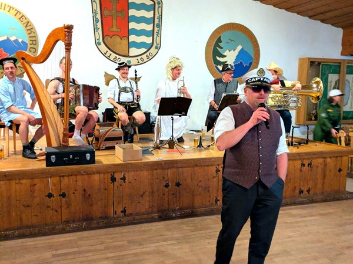
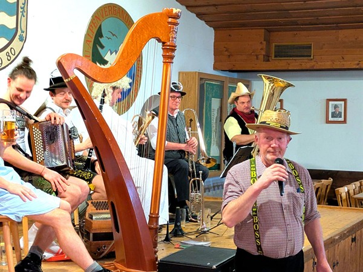
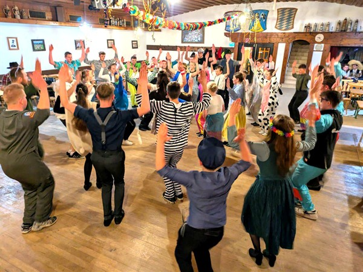

Schwungvoller Tanzkursabschluss in Hittenkirchen
Mit einem schwungvollen maskierten Abschlussabend ging der Jugend-Volkstanzkurs des Trachtenvereins „Almarausch" Hittenkirchen im Trachtenheim zu Ende. Eingeladen waren neben den jugendlichen Kursteilnehmern auch ältere Volkstanzfreunde, die gemeinsam unter der musikalischen Gestaltung der Rottauer Tanzlmusi einen abwechslungsreichen Tanzabend erlebten.
Zur Begrüßung richtete Tanzkursleiter Florian Wörndl das Wort an die Anwesenden. Er zeigte sich erfreut über den Verlauf der vier Kursabende, die im Schnitt mit über 100 Jugendlichen wieder sehr gut besucht wurden. Im Laufe des Abends präsentierten die Jugendlichen die im Kurs erlernten Tänze und zeigten dabei sichtlich Freude am gemeinsamen Tanzen.
Walzer, Boarischer und weitere Volkstanz-Klassiker sorgten für vielseitige Tanzrunden. Besondere Aufmerksamkeit erhielt im weiteren Verlauf ein Gemeinschaftsplattler, der von den Buam - und zum Teil auch von den Dirndl - geplattelt wurde.
Zum Abschluss bedankte sich Vorstand Christoph Kaufmann im Namen der Vorstandschaft bei den jungen Teilnehmerinnen und Teilnehmern. Ein besonderer Dank galt Tanzkursleiter Florian Wörndl, seinen Helferinnen Johanna und Antonia Wörndl sowie dem Tanzkursspieler Kilian Lampersberger. Als Anerkennung für ihren Einsatz erhielten sie jeweils einen Gutschein.




Bericht und Bilder: Michael Hötzelsperger